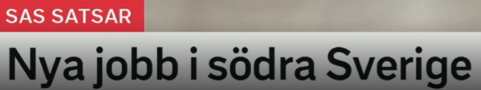
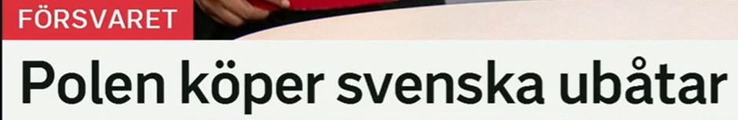
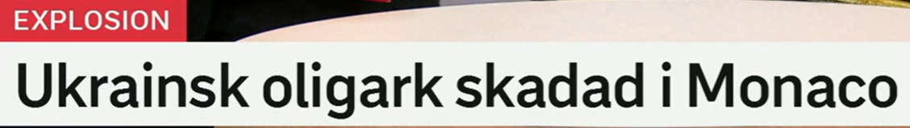
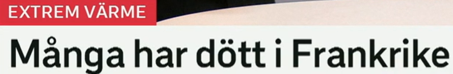
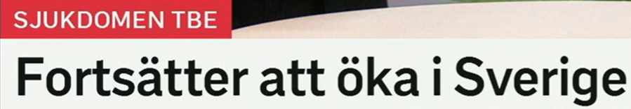
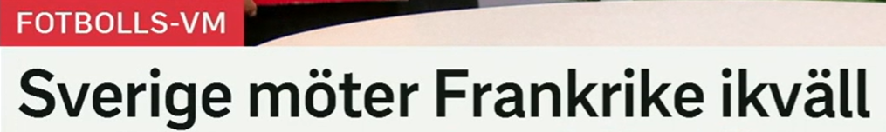

标题总览
Snipaste_2026-07-05_20-11-02.png
Snipaste_2026-07-05_20-11-30.png
Snipaste_2026-07-05_20-13-22.png
Snipaste_2026-07-05_20-13-40.png
Snipaste_2026-07-05_20-14-02.png
Snipaste_2026-07-05_20-14-25.png

Nya jobb i södra Sverige
瑞典南部新增工作岗位。
栏目 SAS satsar 提供动作背景；主标题是省略谓语的名词短语，不说明岗位数量或具体地点。
satsa · 动词
词形：satsar–satsade–satsat
含义：投资、重点发展、全力投入
搭配：satsa på något；satsa pengar på
近义：investera i, prioritera
jobb · ett-名词
词形：ett jobb–jobbet–jobb–jobben
近义：arbete, tjänst, anställning
搭配：skapa jobb, söka jobb, få jobb
辨析：jobb 较日常；anställning 强调雇佣关系。
Företaget satsar på södra Sverige. 公司重点投资瑞典南部。
Satsningen kan skapa nya jobb. 这项投入可能创造新岗位。

Polen köper svenska ubåtar
波兰购买瑞典潜艇。
完整的主语–谓语–宾语标题；截图本身没有给出数量、型号或交易条件。
köpa · 动词
词形：köper–köpte–köpt
近义：anskaffa（正式：购置）, förvärva
反义：sälja
搭配：köpa från, köpa in
ubåt · en-名词
词形：en ubåt–ubåten–ubåtar–ubåtarna
构词：u(b)+båt，可联想“水下的船”
相关：fartyg 舰船；försvar 国防
搭配：svenska ubåtar, bygga ubåtar
Landet ska köpa in ny utrustning. 该国将采购新设备。
Ubåten är ett militärt fartyg. 潜艇是一种军用舰艇。

Ukrainsk oligark skadad i Monaco
一名乌克兰寡头在摩纳哥受伤。
标题省略了 har blivit 或 är；栏目只表明主题与爆炸有关，不足以推出更多经过。
skadad · 过去分词
原形：skada；skadar–skadade–skadat
变化：skadad, skadat, skadade
近义：sårad（受伤）, drabbad（受影响）
反义：oskadd
oligark · en-名词
词形：en oligark–oligarken–oligarker
含义：拥有巨大财富及影响力的寡头
搭配：rysk/ukrainsk oligark
场景：政治、经济新闻，正式。
En person skadades i explosionen. 一人在爆炸中受伤。
Ingen blev allvarligt skadad. 无人受重伤。

Många har dött i Frankrike
法国已有多人死亡。
栏目给出“极端高温”主题；标题使用现在完成时，强调截至当前已经发生的结果。
har dött · 现在完成时
原形：dö；dör–dog–dött
新闻近义：har omkommit
名词：ett dödsfall；dödssiffran
搭配：dö av, dö i
extrem värme
värme：en-名词，热、高温
近义：värmebölja, rekordvärme
搭配：drabbas av extrem värme
反义：extrem kyla
Flera personer har dött av värmen. 数人因高温死亡。
Värmeböljan fortsätter. 热浪仍在持续。

Fortsätter att öka i Sverige
（TBE 疾病相关情况）在瑞典继续增加。
主语由栏目 Sjukdomen TBE 补足；仅凭标题无法确定增加的是病例数、传播范围还是其他指标。
fortsätta att
词形：fortsätter–fortsatte–fortsatt
结构：fortsätta att + 动词
近义：fortgå, hålla på
反义：sluta att
öka · 动词
词形：ökar–ökade–ökat
近义：stiga, växa
反义：minska, sjunka
搭配：öka kraftigt, antalet ökar
Antalet fall fortsätter att öka. 病例数继续增加。
Priserna ökade kraftigt. 价格大幅上涨。

Sverige möter Frankrike ikväll
瑞典今晚迎战法国。
体育标题中 möter 不只是“遇见”，而是“与……交锋 / 比赛”。
möta · 动词
词形：möter–mötte–mött
近义：spela mot, ställas mot
日常：möta någon = 见某人
搭配：möta ett lag, möta kritik
ikväll · 副词
含义：今晚
相关：i kväll（分写也可）, i natt
对比：i går kväll 昨晚
场景：赛程、活动与日常计划。
Sverige spelar mot Frankrike ikväll. 瑞典今晚对阵法国。
Laget mötte hårt motstånd. 球队遭遇强劲对手。
重点词表与复习
| 词汇 | 中文 | 高频搭配 | 近义 / 反义 |
|---|---|---|---|
| satsa | 投入、重点发展 | satsa på; en satsning på | investera, prioritera |
| jobb | 工作、岗位 | skapa/söka/få jobb | arbete, anställning |
| köpa | 购买 | köpa in; köpa från | anskaffa / sälja |
| skadad | 受伤的 | allvarligt skadad | sårad / oskadd |
| dö | 死亡 | dö av; har dött | omkomma |
| fortsätta | 继续 | fortsätta att öka | fortgå / sluta |
| öka | 增加 | öka kraftigt | stiga / minska |
| möta | 迎战、遇见 | möta Frankrike/kritik | spela mot |
新闻标题表达
省略谓语
Nya jobb … 与 Oligark skadad … 为追求简短，分别省略“产生”和“已经受伤”等谓语。
栏目补主语
Fortsätter att öka 的主语要从栏目 Sjukdomen TBE 获取。
变化趋势
öka/stiga 增加；minska/sjunka 减少；fortsätta att 强调趋势延续。
体育对阵
A möter B、A spelar mot B 都表示 A 对阵 B。
自测
搭配填空
1. Företaget ___ på nya jobb.
2. Antalet fall fortsätter att ___.
3. Sverige ___ Frankrike.
答案
1. satsar 2. öka 3. möter
翻译练习
1. 公司采购新设备。
2. 无人受重伤。
3. 价格大幅下降。
参考答案
1. Företaget köper in ny utrustning.
2. Ingen blev allvarligt skadad.
3. Priserna sjönk kraftigt.